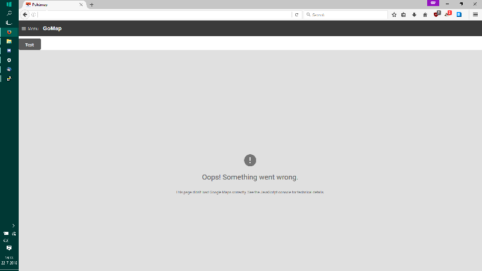
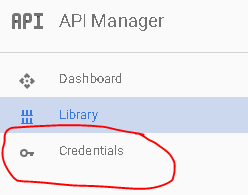
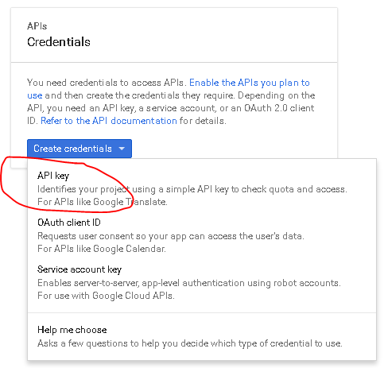
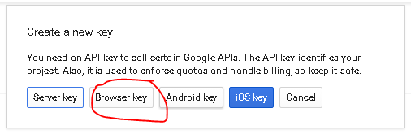

Google Maps Key¶
This project uses Google Maps. There’s one map coupled with the project, but as it gets more popular we’ll definitely hit the rate-limit making the map unusable.
Common error¶

How to fix¶
Go to Google API Console
If it’s the first time, click ‘Next’ on a bunch of pop-ups or just click somewhere where the pop-ups aren’t
Create Credentials

- Select a project: Create a project
- Project name: Anything you want
- Yes/No for email
- Yes to agree to ToS
- Click create.
Get your API Key
- Click on Credentials again
- Click Create -> API
- Choose ‘Browser Key’
- Click ‘Create’ and then copy the API Key somewhere  
Enable two Google Maps APIs
- Google Maps Javascript API - Enables Displaying of Map
- Click on ‘Library’
- Click on Google Maps Javascript API
- Click ‘ENABLE’
- Google Places API Web Service - Enables Location Searching
- Click on ‘Library’
- Type ‘Places’ into the search box ‘ Search all 100+ APIs’
- Choose Google Places API Web Service
- Click ‘ENABLE’
- Google Maps Javascript API - Enables Displaying of Map
Configuration of API Key¶
- Navigate to your pokemon map directory, and inside the config folder you will find config.ini.
- Add your previously created Google API key in this file, save it, and re-run the server! it should be working now! If you see an error, make sure you actually enabled the Javascript API in Step 5.